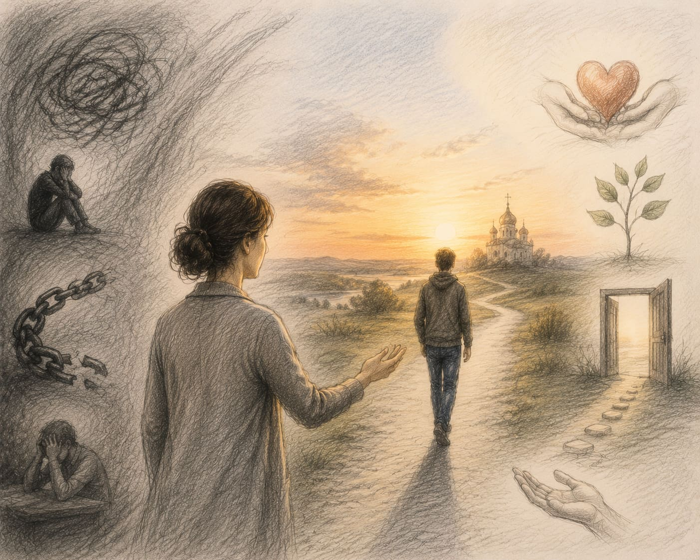
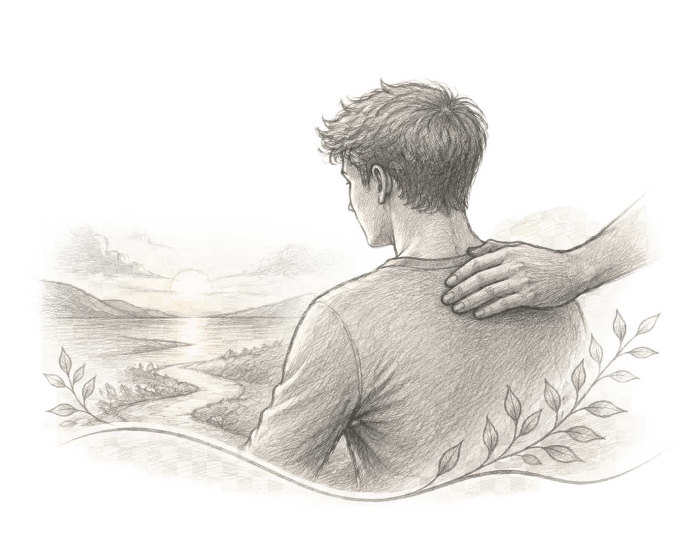
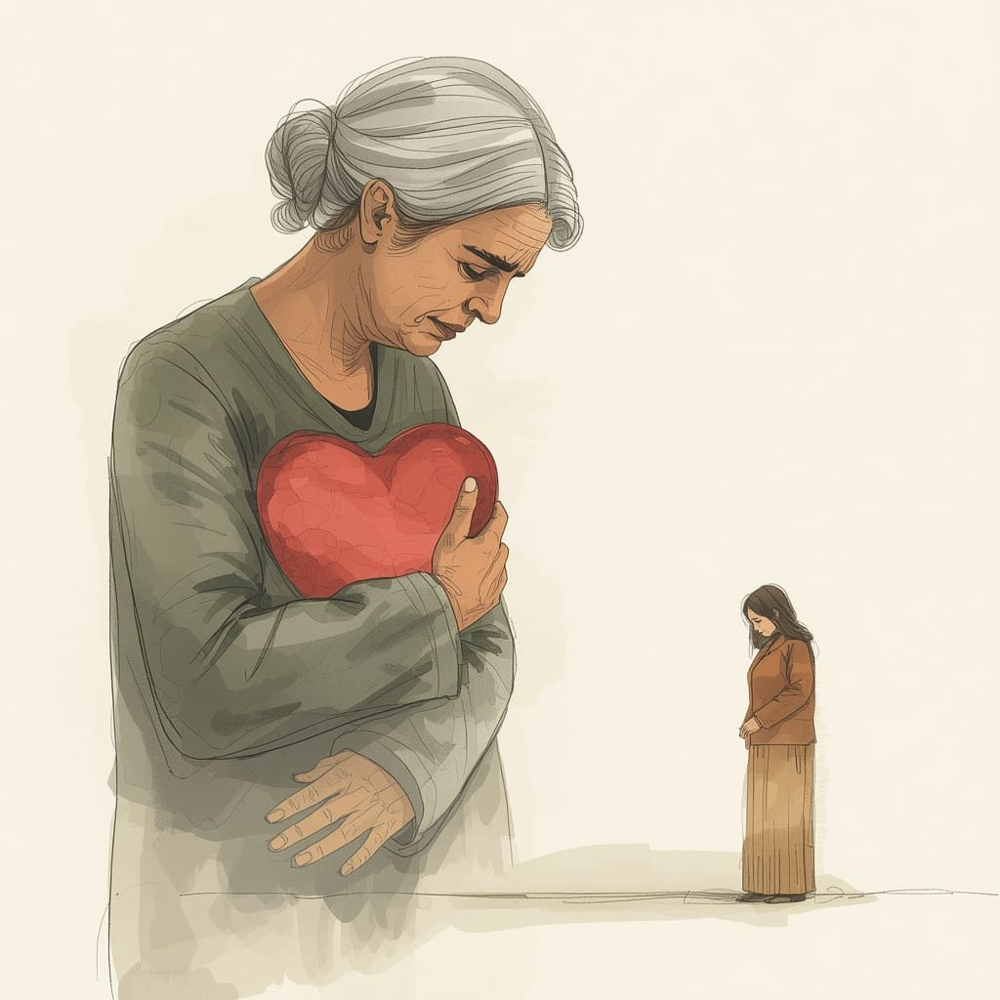

+375 29 784 18 20
|
+375 29 557 86 41
Когда рядом находится человек с зависимостью, близкие часто сталкиваются с тревогой, страхом и непониманием, как правильно помочь.
Поддержка начинается не только с желания изменить ситуацию, но и с понимания проблемы, границ и возможных шагов к восстановлению.

Когда человек сталкивается с зависимостью, близкие часто пытаются решить проблему за него, контролировать каждый шаг или скрывать последствия.
Но настоящая помощь начинается с понимания ситуации, поддержки и осознания того, что зависимость требует комплексного подхода.
Важно не только стремиться изменить жизнь близкого человека, но и создать условия, в которых он сможет увидеть необходимость перемен и принять помощь.
Близкие люди часто хотят помочь как можно быстрее, но изменения требуют времени, понимания и правильного подхода.
Важно не только говорить о последствиях зависимости, но и поддерживать человека в стремлении обратиться за помощью и начать путь восстановления.
Спокойствие, уважение, доверие и поддержка семьи помогают создать условия, в которых человеку легче сделать шаги к изменениям.
Когда близкий человек сталкивается с зависимостью, важно понимать, какие действия действительно могут помочь и какие шаги можно сделать уже сегодня.
Важно увидеть зависимость как серьёзную проблему, которая требует внимания и поддержки, а не только силы воли человека.
Спокойный разговор, уважение и поддержка помогают сохранить связь с близким человеком в сложный период.
Специалисты помогают лучше понять ситуацию и найти правильный путь поддержки для человека и его семьи.
Близким людям тоже нужна поддержка, потому что восстановление затрагивает всю семью.

Помогая близкому человеку справляться с зависимостью, родные часто забывают о собственном состоянии и полностью погружаются в чужую проблему.
Поддержка не означает постоянный контроль, решение всех последствий или ответственность за выбор другого человека.
Здоровая помощь начинается с понимания границ, спокойного отношения и готовности поддержать человека на пути восстановления.
Разговор с человеком, который столкнулся с зависимостью, требует спокойствия и понимания.
Важно избегать обвинений и давления, говорить о своих переживаниях и показывать готовность поддержать, если человек решит обратиться за помощью.
Даже один спокойный разговор может стать первым шагом к осознанию проблемы и началу изменений.

Зависимость влияет не только на самого человека, но и на его близких. Поэтому восстановление часто становится общим процессом, в котором важно внимание к каждому участнику.
Обращение за помощью — это не признание слабости, а возможность получить поддержку, разобраться в ситуации и начать изменения.
В центре «Анастасис» помогают не только человеку, проходящему реабилитацию, но и его близким — понять происходящее и найти правильный путь поддержки.